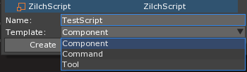
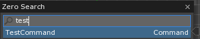
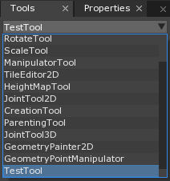
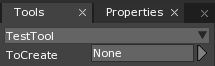

ZilchScript
A ZilchScript resource is an in-editor representation of a ZilchScript file, which is a text file that follows the syntax of the Zilch language. A single ZilchScript usually defines and implements a single component, however it can contain any number of object definitions if needed.
Common Uses
- Defining custom ZilchComponents and ZilchEvents
- Extending existing engine tools, commands and libraries
- Implementing custom game logic
Using ZilchScripts
Creating a ZilchScript
A new ZilchScript can be added by using the Add command Command : Add or clicking on the Add button, followed by selecting ZilchScript. After giving the new ZilchScript a name it’s also possible to choose a template to use for the ZilchScript, depending on what the script will be used for.

The most commonly used template is Component and is therefore the default, however a ZilchScript can also be used to create a custom Zero Command or Tool.
Component Template
The Component template will generate a simple class structure which inherits from ZilchComponent inside the newly create ZilchScript.
class TestScript : ZilchComponent
{
function Initialize(init : CogInitializer)
{
//Zero.Connect(this.Space, Events.LogicUpdate, this.OnLogicUpdate);
}
function OnLogicUpdate(event : UpdateEvent)
{
}
}
By inheriting from ZilchComponent, it becomes attachable to any in game object.
Note
Zilch is a statically compiled language, which means that all object definitions are global and aware of each other. It also means that in order for any one object definition to be compiled the entire project must be in a compilable state.
Command Template
When creating a ZilchScript using the Command template, a basic class definition which inherits from ZilchComponent is generated.
[Command(autoRegister:true)]
class TestCommand : ZilchComponent
{
function Initialize(init : CogInitializer)
{
Zero.Connect(this.Owner, Events.CommandExecute, this.OnCommandExecute);
}
function OnCommandExecute(event : CommandEvent)
{
Console.WriteLine("TestCommand Command Executed");
}
}
The [Command(autoRegister:true)] will register the ZilchScript so that it can be used just like any other Command in Zero, and the connection to Events.CommandExecute will trigger the OnCommandExecute function whenever the custom command is used.

While Commands can be used to trigger several things in the Editor, in order to effect the game space it needs to use event.Space in the OnCommandExecute function, rather than this.Space.
Tool Template
The template for a new Tool script is slightly more complex, but it is also commented for ease of use.
[Tool(autoRegister:true)]
class TestTool : ZilchComponent
{
function Initialize(init : CogInitializer)
{
// We connect to this.Owner because we will get all events
// forwarded to us when we're the active tool
Zero.Connect(this.Owner, Events.LeftMouseDown, this.OnLeftMouseDown);
}
function OnLeftMouseDown(event : ViewportMouseEvent)
{
// The space that was clicked in
var targetSpace = event.Viewport.TargetSpace;
// The ray from the mouse into the world
var mouseRay = event.WorldRay;
// Find the first object that was clicked on
var castResult = targetSpace.PhysicsSpace.CastRayFirst(mouseRay);
var clickedObject = castResult.ObjectHit;
if(clickedObject != null)
{
// Undo / redo is handled through our operation queue object
var queue = Zero.Editor.OperationQueue;
// Lets the Editor know that we're going to start modifying objects.
// Any objects modified between this and the 'EndBatch' call will
// all be undone at once with ctrl+z
queue.BeginBatch();
// Before modifying the properties of an object, call this to save
// the state of the object so that changed can be recorded once EndBatch is called.
queue.SaveObjectState(clickedObject);
// Make the object 5% bigger
clickedObject.Transform.Scale *= 1.05;
// We've finished modifying objects. Now when you press ctrl+z,
// the object should back to its previous scale
queue.EndBatch();
// This tells the Editor not to do what it would normally do with this event.
// In the case of LeftMouseDown, the editor would attempt to select an object.
event.HandledEvent = true;
}
}
}
Like the Command template uses the [Command(autoRegister:true)] attribute, the Tool template uses the [Tool(autoRegister:true)] attribute to register the Component defined in the ZilchScript as a tool. This allows it to be selected like any other engine tool.

The template tool is implemented so that when it is selected it will increase the scale of the first object hit by the projected ray from the mouse when the left mouse button is depressed. Since it is using a ray however, the object in question must have some form of collider attached.
Tools may also have Properties defined, which will then be available when that particular tool is chosen.
[Tool(autoRegister:true)]
class TestTool : ZilchComponent
{
[Property]
var ToCreate : Archetype;

Also a part of the Tool template is a section of comments giving the user a list of events available for use for Tools.
//----------------- Tool Specific Events (Connect to this.Owner)
// Events.GetToolInfo - Called when the tool is selected - Access to SelectTool
// Events.ToolActivate - Called when the tool is selected
// Events.ToolDeactivate - Called when the tool is deselected
// Events.ToolDraw - Called every frame while the tool is selected
//----------------- Input Events (Connect to this.Owner)
// Events.LeftMouseDown
// Events.LeftMouseUp
// Events.RightMouseDown
// Events.RightMouseUp
// Events.MiddleMouseDown
// Events.DoubleClick
// Events.OnMouseScroll
// Events.MouseMove
// Events.KeyUp
// Events.KeyDown
//----------------- If you want to do a mouse drag,
// Events.MouseDragStart
// Events.MouseDragMove
// Events.MouseDragEnd
//----------------- Other Events (Connect to this.Owner)
//Events.FocusLostHierarchy - The viewport no longer has focus